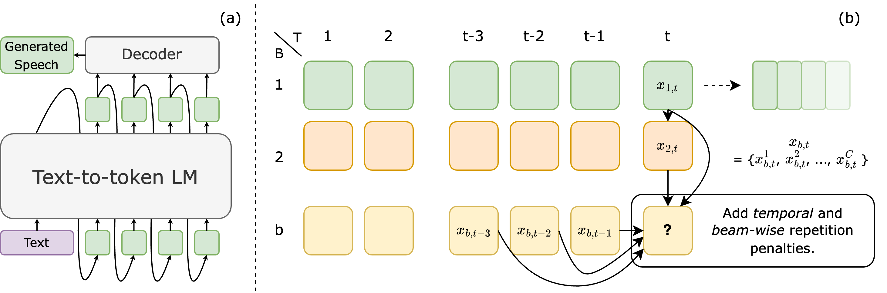

Anonymous Authors
Abstract. Tokenising continuous speech into sequences of discrete tokens and modelling them with language models (LMs) have achieved a success for text-to-speech (TTS) synthesis. Although these models can generate speech with high quality and naturalness, their synthesised samples can still suffer from artifacts, mispronunciation, word repeating, etc. In this paper, we argue these undesirable properties could partly be caused by the randomness of sampling-based strategies during the autoregressive decoding of LMs. Therefore, we look at maximisation-based decoding approaches and propose Temporal Repetition Aware Diverse Beam Search (TRAD-BS) to find the most probable sequences of the generated speech tokens. Experiments with two most recent LM-based TTS models show that the proposed maximisation-based decoding strategy can generate speech with fewer mispronunciation and better speaker consistency.

(a) A general inference paradigm of LM-based TTS. Speech tokens are generated autoregressively before converted into speech. (b) TRAD-BS operates through both decoding steps and beams, adding temporal and beam-wise penalties to repeated tokens. This can also be applied to the case where multiple tokens need to be decoded at a single step.
In this section, show the zero-shot TTS samples from the VoiceCraft. The speech prompt is the first 3 second segment, same as the setup in the VoiceCraft paper.
| Text | Prompt | VoiceCraft | +TRAD-BS |
|---|---|---|---|
| so, i, my main dealings are with the scottish parliamentary corporate body. | |||
| for what? oh cuz we've got nurses who were in full hospital gowns in a whole god damn tents set up like it's side of the road for a covid test. | |||
| well, first of all, i've got huge support from my deputy and the senior management team, who reassured me that, of course this isn't true, and you know it isn't true, and we know it isn't true. | |||
| and i think for me also like this has been the central the lesson that i am learning as, as, i grow up every day. | |||
| i'm not sure we were like looking for personal relationship when we started, like a friendship. | |||
| and one of the ways to do that is to pay for it. and when people are asked to pay for something, they will be a lot more careful about the way they behave. | |||
| and they don't scale as simply as more modern systems do. so you know the fact that you're hiring programmers out of retirement, and people don't live forever. | |||
| whatever bring a little joy that we need so much right now to our lives katie i can't wait to hear what you brought us the week. | |||
| and also, how can those skills trans like to other life experiences. | |||
| we know trump wants credit for the vaccine being developed quickly but this isn't fast food. like no one is really pumped about like a a rushed medical product right? like no one's getting the the fastest created tylenol ever right? |